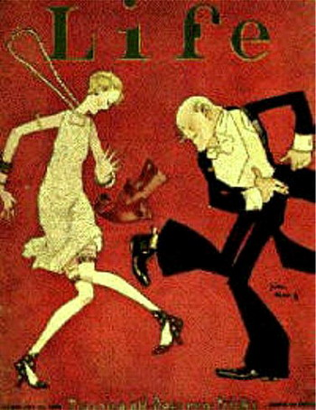

1920s
Georgette Vivienne, tako bi bilo moje skraćeno blog ime u dvadesetim godinama prošlog veka.
OK, da pojasnim. Ima kviz. Ukucate svoje ime, i oni vam izbace kako bi ste se zvali u 1920s. U čemu je poenta, ne znam, jel' to znači da su se u 'ludim dvadesetim' davala neka specifična imena (pa još i prezimena), nemam ideju. Uglavnom, ukucala sam 'Lara' oni su izbacili ovaj rezultat. Mogla bih reći da je od gomile testova i kvizova dostupnih na netu, ovaj među besmislenijim.
Čitanje o generaciji pisaca iz 20ih godina 20og veka koje su nazvali Bright Young People i kreatorima posebnog književnog pravca 'the party novel', navelo me na mali reserch o toj dekadi.
Ova ekipa je, u nečemu što je ličilo na manifest, o sebi i svom svetu rekla:
"Masked parties, Savage parties, Victorian parties, Greek parties, Wild West parties, Russian parties, Circus parties, parties where one had to dress as somebody else, almost naked parties in St John's Wood . . ." To su im bile bitne stvari.
Wikipedia ima zanimljivu opservaciju: Da su dvadesete, pedesete i devedesete godine prošlog veka imale nešto zajedničko, posebno u Americi. To je, pre svega, ekonomski prosperitet. No, dok su dvadesete i devedesete bile liberalne, pedesete su bile uglavnom konzervatizvne. U Evropi, dvadesete su bile komplikovanije. Amerikanci su ih nazvali još i Roaring Twenties.
Mi smo ih pominjali u tekstovima o beogradskom privatnom životu, a i o američkom privatnom životu, opisanom kroz knjigu "Nedelja ujutro". I na You Tubu ima raznih filimića, bave se i privatnim i umetničkim i javnim životom, meni je sladak ovaj koji počinje pitanjem: "So granny, what did you do when you were a girl?"
Ne znam kako nanny, ali moja poseta jednom dekadentnom jazz klubu iz 20ih završila se ozbiljnom sistemskom greškom. Registrovala sam se u Second Life (da vidim kako izgleda i to), Srbiju nisam našla, videla sam samo hram Svetog Save, to mi je bilo dosta. I onda odem do pomenutog kluba, bilo je super dok je trajalo, muzika, ambijent i to, ali trajalo je kratko. A onda je kompjuter shvatio da to prevazilazi naše mogućnosti, i mogućnosti srpskog interneta, i kolabirao. Morala sam da čekam da se baterija isprazni pa da krenem u život broj jedan iz početka. Te bi to i od ludih dvadesetih, i od ludog drugog života bilo sve, barem za sada.
pozdrav,
Georgette
 RSS feed
RSS feed
 sadržaji se objavljuju pod
sadržaji se objavljuju pod
Komentari
Yo Georgette,
ti jazz klubovi dvadesetih mu onda dodju kao rejv zurke devedesetih?
kiko | 01.10.07 07:52
Ako već nisi, potraži 'Gentlemen Prefer Blondes' i 'But Gentlemen Marry Brunettes', Anita Loos - chick-lit pravo iz ludih dvadesetih, i ludo zanimljivo štivo. .)
ubipacijentic | 01.10.07 15:10
Zvuci dobro, pribelezicu!
La Lara | 01.10.07 15:48
ja imam problem sa ostavljanjem komentara, pa se ponavljam
Kako zanimljiv post! otkrila si mi 2. zhivot i sada se loodo zabavljam )))
redsandra | 01.10.07 16:16
Drago mi je. Ali pazi se navlacenja:) (Jel' to znaci da tvoj prenosivi i tvoj internet podnose 2. zivot. Moji su preslabi)
la lara | 01.10.07 17:02
Malo off topic:Kao što postoji taj generator imena iz 20tih godina, tako ima i generator tvog porn-imena. Ako želiš u sex industriju. Ne znam po kom principu radi. Isto tako ukucaš ime i prezime i on ti izbaci nešto tipa wendy goodtime ili venera biggs :))
elektrokuhinja | 02.10.07 06:13
(( ne, ni prenosivi, a ni internet Pokvarishe mi zabavu, a mogla sam se navuci, bash mi se dopalo)
redsandra | 02.10.07 10:29
Dve reci - Mirjam romani.
Feisty | 03.10.07 05:51